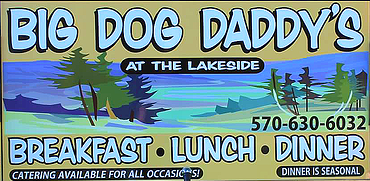

Over the summer I typically waitress at a few different restaurants around my hometown in Pennsylvania. One of those restaurants is Big Dog Daddy’s at the Lakeside. The owners of the restaurant, Patti and Eddie, have a very unique story. In July 2010, Eddie was diagnosed with end stage renal failure. He was immediately placed on dialysis but his health declined rapidly. He refused to allow his children to be tested as donors because he feared compromising their health for his own. As his two children watched their fathers health decline they decided to be tested without his knowledge. His daughter, Trish, was a perfect match and told her father she was donating a kidney whether he liked it or not. He accepted her kidney and is now living a healthy life. From his experience he has devoted his life to raising money for The Gift of Life Foundation and the National Kidney Fund. Each year they hold a fundraiser called the Big Dog Daddy Fest and I pitched their story to our local newspaper and they received great press coverage and the largest attendance ever for the event. |